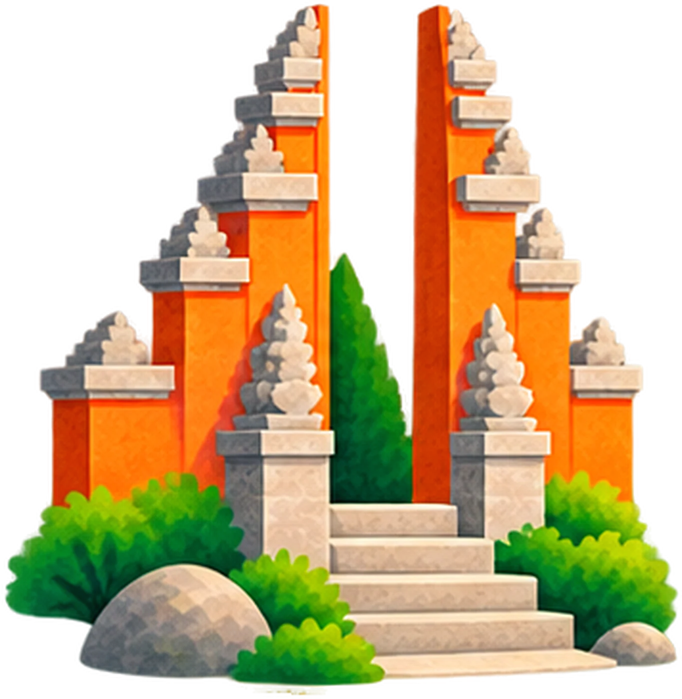
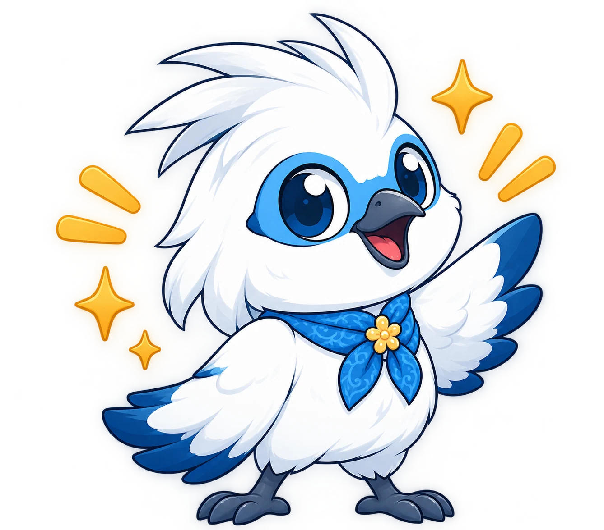

BERANDA

Pengenalan SAKALA, hero panorama, pilihan destinasi unggulan, dan kurasi cerita Pulau Dewata.
JelajahiMenghubungkan keindahan bentang alam, keluhuran tradisi, dan denyut kehidupan krama Bali dalam satu panduan editorial bermakna.
Menjaga keseimbangan antara pelestarian tradisi, penghormatan adat istiadat, dan pariwisata yang bertanggung jawab di Pulau Dewata.

Terinspirasi dari konsep sekala dalam kebudayaan Bali, SAKALA hadir dengan gagasan bahwa keindahan sebuah tempat tidak hanya terletak pada apa yang terlihat di permukaan, tetapi juga pada makna yang hidup di baliknya.
Bali bukan sekadar pulau dengan bentang alam yang memukau. Bali adalah ruang tempat budaya diwariskan, tradisi dijalankan, kreativitas berkembang, masyarakat membangun kehidupan, dan alam menjadi bagian tak terpisahkan dari keseharian.
Pelajari Misi KamiMelalui SAKALA, setiap perjalanan menjadi kesempatan untuk melihat lebih dekat, memahami lebih dalam, dan menghargai lebih banyak hal. Dari destinasi alam hingga warisan budaya, dari kuliner khas hingga cerita masyarakat lokal, setiap sudut Bali memiliki perspektif yang layak ditemukan.
Kami bertujuan menghubungkan eksplorasi dengan tanggung jawab—menghormati tata krama pura, busana sembahyang, menjaga kelestarian lingkungan, dan mengapresiasi orang-orang yang membuat Bali tetap hidup.
Jelajahi 10 Halaman SAKALA
Panduan digital komprehensif yang dirancang untuk memperkenalkan seluruh keindahan alam, keluhuran budaya, dan denyut kehidupan Pulau Dewata.
Terinspirasi dari burung Jalak Bali (Leucopsar rothschildi), fauna endemik langka lambang kemurnian budi dan harmoni Pulau Dewata.
"Om Swastyastu! Saya Kinara, Jalak Bali yang siap memandu perjalanan Anda menyelami kedalaman budaya dan kearifan pulau ini."

Kolaborasi terstruktur menggabungkan tata visual editorial, kurasi budaya mendalam, dan teknologi web interaktif untuk memperkenalkan kearifan jiwa Bali.
Pengembangan tata letak visual modern, tipografi editorial, navigasi pulau interaktif, dan pengalaman pengguna yang bersih, estetik, dan nyaman dijelajahi.
Dokumentasi komprehensif nilai filosofi sakral, upacara adat piodalan, pelestarian seni tari dan gamelan, serta kurasi artikel naratif cerita Pulau Dewata.
Penyusunan direktori destinasi wisata unggulan, peta rute interaktif, ensiklopedia kuliner autentik, pelestarian alam asri, dan itinerary perjalanan cerdas.